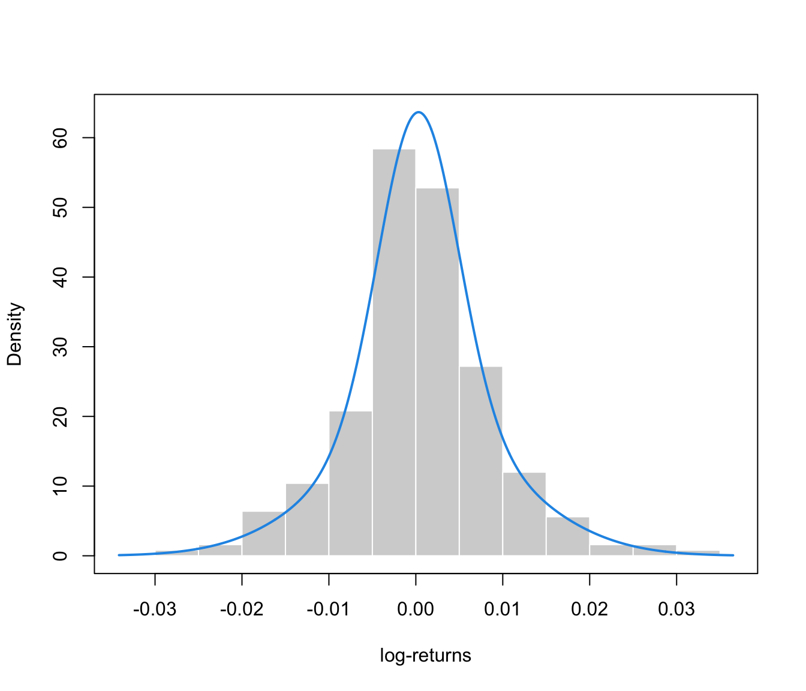

Modeling log-returns distribution via Gaussian Mixture Models
GMMlogreturn.RdGaussian mixtures for modeling the distribution of financial log-returns.
Usage
GMMlogreturn(y, ...)
# S3 method for class 'GMMlogreturn'
summary(object, ...)Arguments
- y
A numeric vector providing the log-returns of a financial stock.
- ...
Further arguments passed to
mclust::densityMclust(). For a full description of available arguments see the corresponding help page.- object
An object of class
'GMMlogreturn'.
Details
Let \(P_t\) be the price of a financial stock for the current time frame
(day for instance), and \(P_{t-1}\) the price of the previous time frame.
The log-return at time \(t\) is defined as:
$$
y_t = \log( \frac{P_t}{P_{t-1}} )
$$
By default, a univariate heteroscedastic GMM using Bayesian regularization
(as described in mclust::priorControl()) is fitted to the observed
log-returns. The number of mixture components is automatically selected
by BIC, unless specified with the optional G argument.
References
Scrucca L. (2024) Entropy-based volatility analysis of financial log-returns using Gaussian mixture models. Entropy, 26(11), 907. doi:10.3390/e26110907
Examples
data(gold)
head(gold)
#> date log.returns
#> 1 2023-01-03 0.0109308628
#> 2 2023-01-04 0.0070955464
#> 3 2023-01-05 -0.0097625244
#> 4 2023-01-06 0.0158964701
#> 5 2023-01-09 0.0045492333
#> 6 2023-01-10 -0.0005875467
mod = GMMlogreturn(gold$log.returns)
summary(mod)
#> ── Log-returns density estimation via Gaussian finite mixture modeling ─────────
#> Model: GMM(V,2)
#> Prior: defaultPrior()
#>
#> log-likelihood n df BIC Entropy
#> 852.46 250 5 1677.3 -3.4098
#>
#> Mixture parameters:
#> Prob Mean StDev
#> 1 0.52433 0.00029069 0.0045432
#> 2 0.47567 0.00073238 0.0107633
#>
#> Marginal statistics:
#> Mean StDev Skewness Kurtosis VaR ES
#> 0.00050079 0.0081227 0.058714 4.5584 0.012877 0.017929
plot(mod, what = "density", data = gold$log.returns,
xlab = "log-returns", col = 4, lwd = 2)
